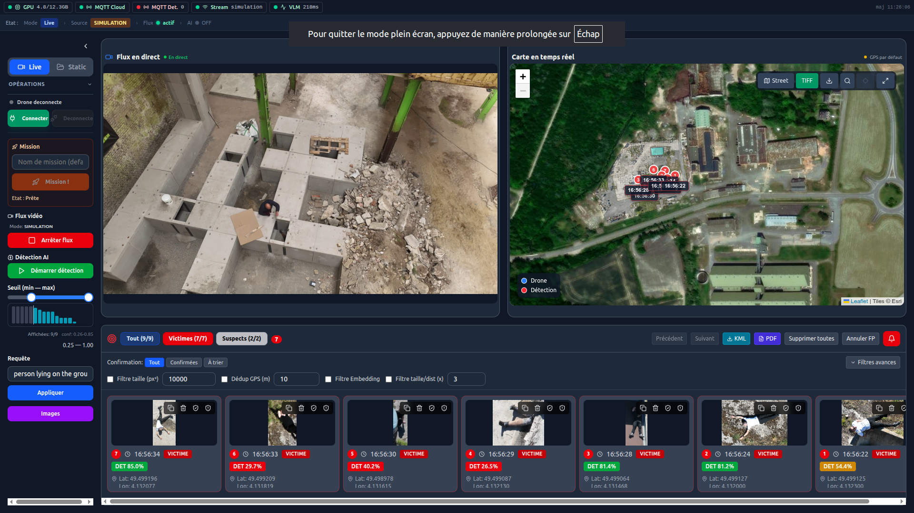
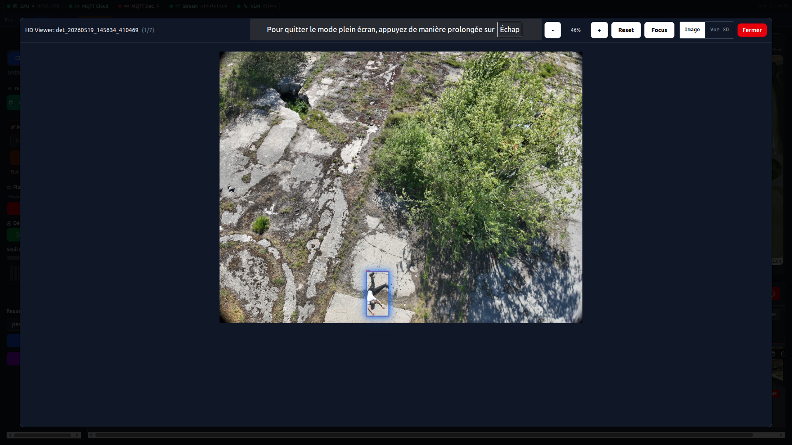
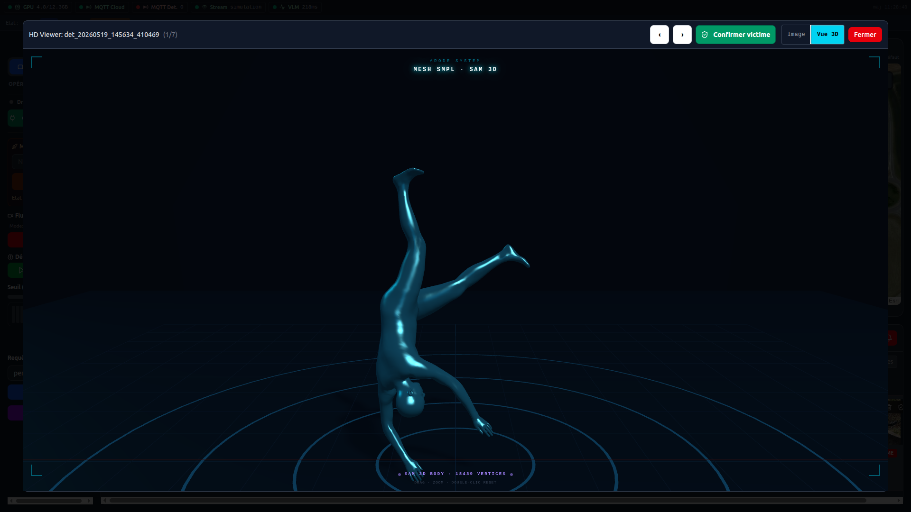
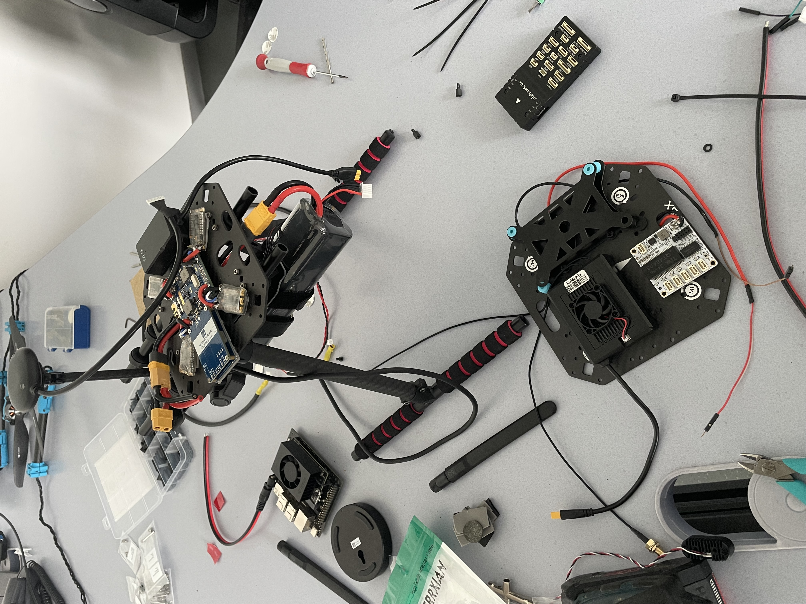
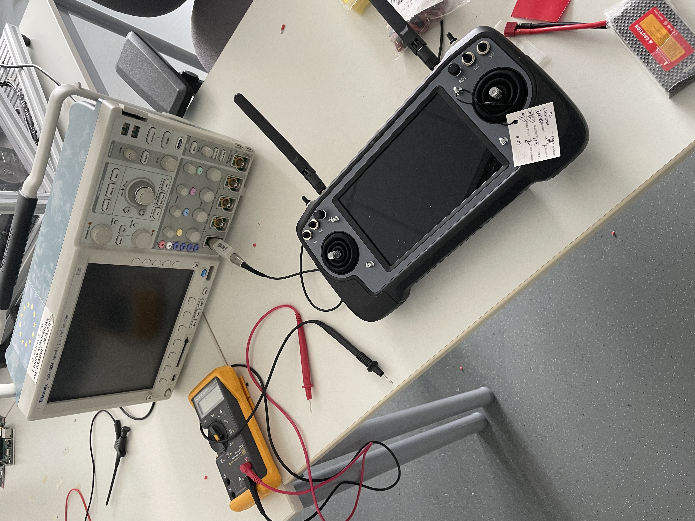
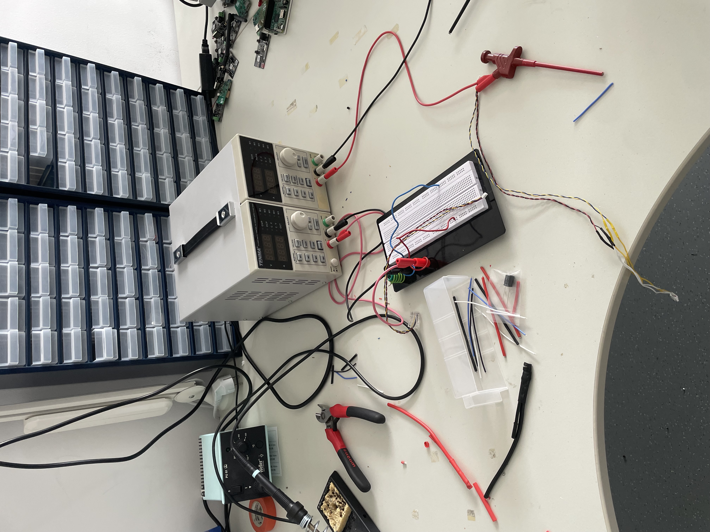

Stage de 3 mois au sein de CapSec, plateforme de recherche de l'UTT rattachée au laboratoire LIST3N. Mission : faire passer le projet ARODE — un système de drone autonome de recherche et sauvetage — du prototype expérimental au système opérationnel déployable.
Réalisé du 16 mars au 19 juin 2026, ce stage R&D s'est étendu sur 3 mois pleins — soit bien plus que la durée minimale, dans la continuité directe d'un premier stage effectué à CapSec en 2025.
CapSec est une startup issue de l'Université de Technologie de Troyes (UTT), à l'avant-garde des technologies de réseaux de capteurs sans fil, avec une expertise pointue sur les drones intelligents et les applications de sécurité. Hébergée dans les locaux de l'UTT, elle bénéficie d'une synergie forte avec le laboratoire LIST3N.
La plateforme s'étend sur 300 m² dédiés à la conception, au test et à la validation de solutions embarquées, avec une plateforme extérieure pour les essais de drones en conditions réelles.
Drone autonome de recherche et sauvetage. Objectif final : sauver des vies en détectant automatiquement des victimes et en reconstruisant en 3D le site d'intervention pour les équipes de secours.
Mavic 3 Enterprise DJI Cloud API Détection IA Reconstruction 3D
« Comment transformer le prototype d'acquisition vidéo ARODE en un système opérationnel complet, capable de détecter automatiquement des victimes en temps réel, de reconstruire en 3D le site d'intervention, et d'offrir aux équipes de secours une interface unifiée fiable utilisable en conditions terrain ? »
Cela impose de basculer de l'architecture monoposte de 2025 vers une architecture distribuée : un backend Python sur serveur GPU pour le traitement IA et la 3D, un frontend web multi-clients comme interface opérateur, et un pilotage à distance du drone via la DJI Cloud API. De nouveaux défis en découlent : cycle de vie GPU, synchronisation par MQTT, conteneurisation Docker, reconstruction 3D massivement parallélisée.
Conception d'un mode live plein écran rassemblant en une vue la cartographie, le flux vidéo direct du drone et le panneau victimes/suspects mis à jour en temps réel — inspiré de l'ergonomie de DJI Pilot 2.
Repositionnement des overlays de télémétrie (lat/lon/altitude/batterie/GPS), marquage rapide des faux positifs par l'opérateur, et nettoyage du frontend pour réduire la charge cognitive en démonstration client.
Diagnostic et correction de régressions sur le pipeline : capture RTSP/MJPEG → filtrage télémétrie → détecteur DEIM v4 → validation Qwen3-VL (fine-tuné LoRA) → publication MQTT.
Identification de la cause racine d'un blocage : le composant TelemetryGate rejetait toutes les frames lorsque altitude_max restait undefined. Diagnostic de freezes vidéo et de crashs Python en charge, via SSH.
Intégration de bout en bout du module SAM 3D Body ViT-H (Meta) : microservice GPU dédié, chargement/déchargement à la demande de la VRAM, contrat d'API détecteur↔SAM, et viewer 3D côté frontend (mesh SMPL de 18 439 sommets).
Déploiement de la stack Docker Compose multi-services sur le serveur bi-GPU RTX 5070 du partenaire : drivers CUDA, runtime NVIDIA conteneurs, broker Mosquitto et adressage MQTT.
En binôme, conception d'un drone sur-mesure destiné aux manœuvres autonomes de rapprochement victime — là où l'écosystème fermé DJI bloque (impossible de commander programmatiquement le déplacement du Mavic 3E).
Choix des composants (SIYI MK32 / A8 mini / R1M, BEC SIYI, Holybro PM02, ReSpeaker 4-Mic), gestion fournisseurs (BOM consolidée), et conception de l'architecture réseau double-flux : duplication non native du flux vidéo vers la radiocommande et une Jetson Orin Nano embarquée pour la détection IA en vol.
Montée en charge sur la base existante (backend FastAPI, frontend Next.js), compréhension de l'architecture des services et mise en place de l'environnement de dev multi-postes (laptop perso, machine CapSec-GTX, serveur partenaire).
Mode live plein écran, génération des missions KMZ depuis l'interface (altitude, vitesse, angle caméra pré-câblés pour déclencher la détection), et fiabilisation du pipeline de détection.
Microservice SAM 3D Body intégré de bout en bout, déploiement de la stack conteneurisée sur le serveur bi-GPU, configuration MQTT et tests de charge des modèles cohabitants.
Vols de test sur la plateforme extérieure CapSec, reproduction de bugs en conditions réelles, remontée structurée. Châssis du drone custom assemblé (livré le 10 juin), Jetson configurée ; moteurs T-Motor reçus le 19 juin (dernier jour).
Le passage du prototype monoposte (2025) à une architecture distribuée multi-clients, synchronisée par MQTT.
Détecteur d'objets DEIM v4 validé par le modèle Vision-Language Qwen3-VL fine-tuné (LoRA) sur dataset drone.
SAM 3D Body ViT-H (Meta) — mesh SMPL de la pose de la victime ; reconstruction photogrammétrique du site via ODM sur GPU.
Conteneurisation Docker Compose, CI GitHub Actions, gestion fine du cycle de vie GPU et auto-reconnexion.
Captures réelles de l'interface opérateur et des modèles de détection.



Assemblage et bancs de test des composants du drone sur-mesure (SIYI, Jetson, T-Motor).



// Schémas d'architecture complets (Mermaid, draw.io) disponibles dans le rapport de stage ci-dessous.
Au terme du stage, le système ARODE a été fiabilisé et déployé sur le serveur du partenaire : bugs identifiés en démonstration corrigés, ergonomie du frontend finalisée, et stack Docker déployée de façon reproductible sur le serveur bi-GPU.
J'ai élargi mon périmètre à des domaines que je ne maîtrisais pas en arrivant : IA appliquée (intégration d'un module de reconstruction 3D du corps humain), industrialisation logicielle (Docker, MQTT, CI), et raisonnement en environnements reproductibles.